Click an icon to open it. Bonus: run bagcheck.app on yourself.
hello.txt
Hi, I'm Alex.
Short for Aleksandra.
After five years working with spatial data and delivering projects, I now design products. Along the way I kept finding processes worth fixing, which is how I started designing and building tools.
This desktop is my portfolio. Start with the QA tool I designed and piloted at DPR, or MoonMates, a hackathon win. Everything else is in work/.
Currently: open to product design roles · London
work/
Selected work
Internal tools, hackathon products and a personal project. Full case studies are added one at a time.
WinnerEngine by Starling challengeHuddleHive Hack 2026
MoonMates
An app for the friends you keep meaning to see. Your circle saves a little every day into a shared pot, a moon fills up as the balance grows, and when it's full the app suggests a time and place that already fit everyone's week.
Team
5 people
Time
24 hours
My role
Product & design
APIs
Engine core + TfL
The brief
“Connect a mock Engine core to an unexpected, non-banking API and create a brand new financial service.”
We paired Engine by Starling with Transport for London. Engine Spaces hold the shared pot, and TfL data finds where your routes already cross, so nobody has to trek across the city.
01 · Context & problem
Friends don't drift apart on purpose
Plans stall in the group chat. Picking a date, agreeing where to meet and splitting the bill all take effort, and saving on your own rarely sticks. We spent the first hours narrowing this down, because choosing the problem was the hardest part of the brief.
02 · My role
Product and design, from the first sketch to the pitch
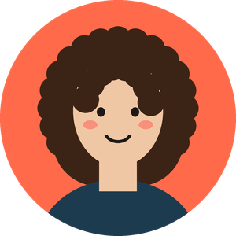
MayaEngineer
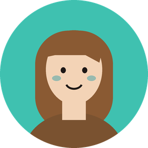
LenaEngineer
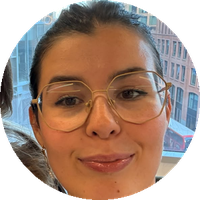
Alex (me)Product & design
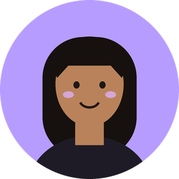
SofiaDesigner
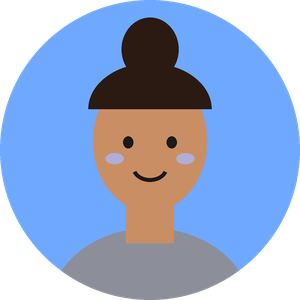
NinaProduct manager
My teammates appear here as avatars with made-up names.
I facilitated our ideation with a Crazy Eights session, then we cut the ideas down until the strongest were left.
I researched the problem from the start, since narrowing it down was our main bottleneck.
I explored which APIs to combine and went to Starling engineers and the judges early for feedback.
I built and pitched several prototypes in Claude Code, then pitched the chosen concept to the team as a clickable prototype: problem, process, technical background and solution.
My prototype's visual language became the product UI, which the team refined for the final pitch.
I designed the logo and reworked our submission document, effectively a PRD, within the 24 hours.
03 · Key decisions
Decisions that shaped the product
Let the moon set the rhythm
Agreeing on a date is often where plans stall. A 30-day lunar cycle gives everyone the same deadline without anyone negotiating it, and watching the moon fill up makes slow saving visible.
Meet where your weeks already cross
Crossed Paths suggests a spot where everyone's week already overlaps, so nobody crosses the city. In the demo the TfL patterns were mocked. Reflections below explain why, and how we'd build it for real.
Make saying yes effortless
When the moon is full, the app drafts the invite and four out of five yeses books the table. A single-use virtual card is ready on the night, and anything left over stays in the Space so the next moon starts ahead.
04 · How the idea evolved
From a coffee pot to a moon
I prototyped two earlier ideas before MoonMates. Coffee Pot put 10p aside every time you bought a coffee alone, towards a coffee with a friend. The judges told us the problem wasn't clear and asked if we knew anyone who would use it. After that we stopped tying the idea to coffee, because the pot could pay for any night out, from pizza to bowling. Full Moon Pizza turned saving into a monthly ritual inside a bank's Spaces. MoonMates kept the ritual, added the friends and a place to meet, and lets the circle pick what they save for.
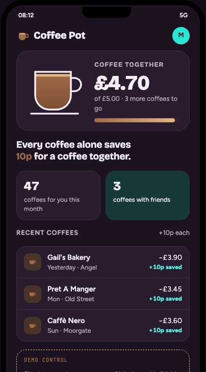
Coffee PotEvery coffee alone saves 10p towards a coffee together.
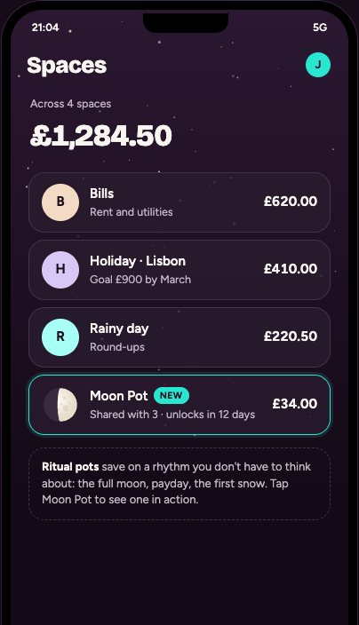
Full Moon PizzaA ritual pot inside your bank's Spaces that unlocks on the full moon.
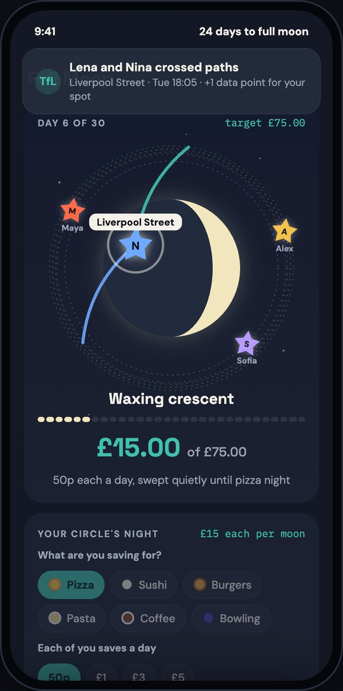
MoonMatesYour circle saves together and TfL finds where your weeks cross.
05 · The prototype
One moon, start to finish
Day 6. Lena and Nina's weeks cross at Liverpool Street.
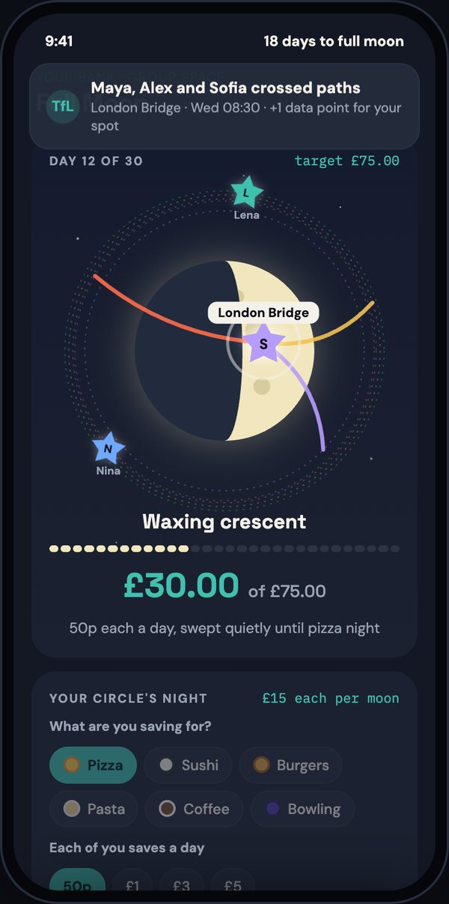
Day 12. Maya, Alex and Sofia meet at London Bridge.
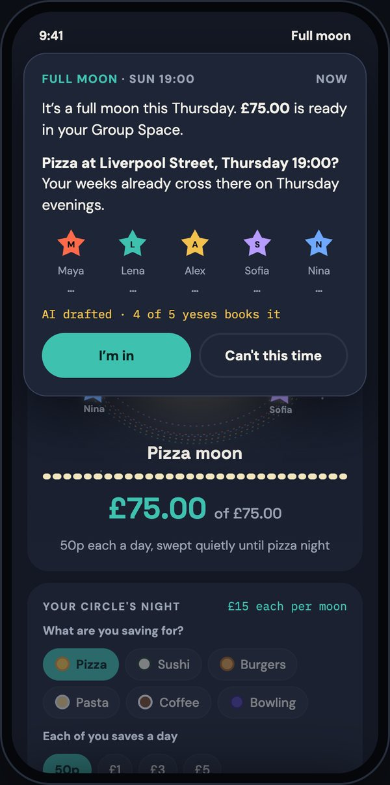
Full moon. The app drafts the invite, and 4 of 5 yeses books it.
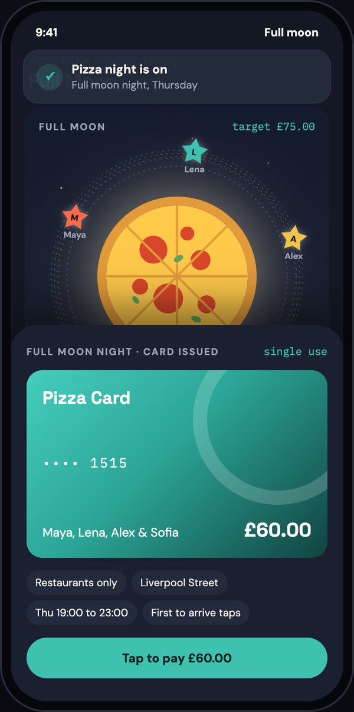
A single-use Pizza Card for the four who said yes.
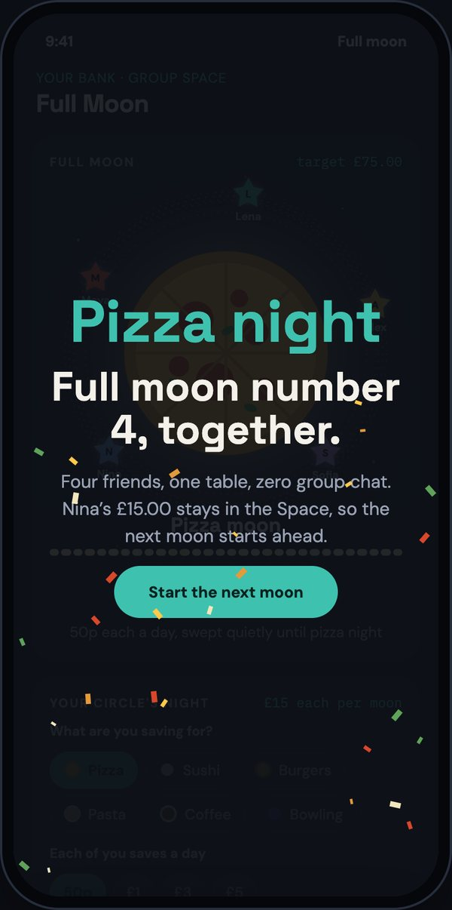
Pizza night. Nina's £15 stays in the Space for the next moon.
06 · Outcome
We won the Engine by Starling challenge
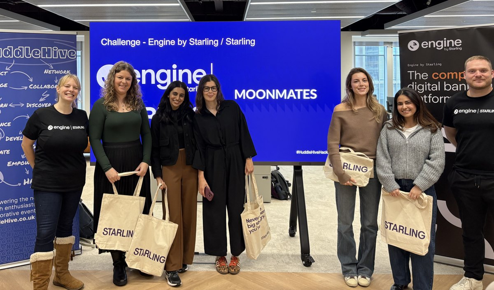
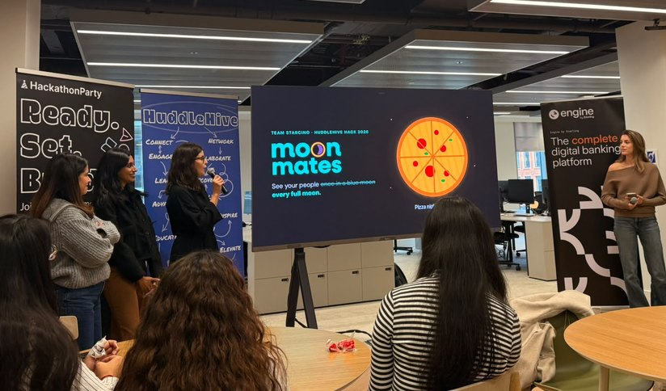
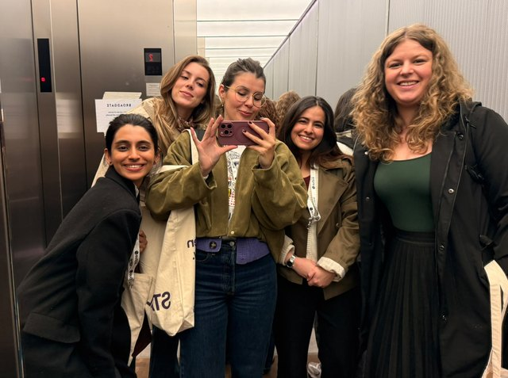
Team IRL
I'm the one with glasses.
07 · Reflections
What I'd do differently: bring privacy in on day one
Midway through the weekend I looked into what data TfL shares. Its Unified API only has open network data: lines, stations, arrivals and journey planning. It has no journey history, because that is personal data under UK GDPR, and weekly patterns show where people live and work.
In our demo
Mocked TfL patterns
The app learns where your weeks cross
The whole circle opts in to share patterns
Fine for a demo, not for real people
How we'd build it
Stations you share
Everyone adds their usual stations and office days
TfL's open journey planner finds the spot that suits the group
No journey history, no tracking
Remove your stations any time
The feature would work the same way without tracking anyone. We spotted this too late to rebuild it within the 24 hours, so the demo kept the mocked data and the fix went on its own slide.
Next time I'll check what data each API gives us, and what that means for the people in it, before designing a feature around it.
A voice-first symptom diary for patients waiting for specialist care. Patients say how they feel instead of typing it, CareLoop fills in the GP form for them, and the practice can see when someone is getting worse.
Team
5 people
Time
24 hours
My role
Product & project lead
Built with
Claude Code
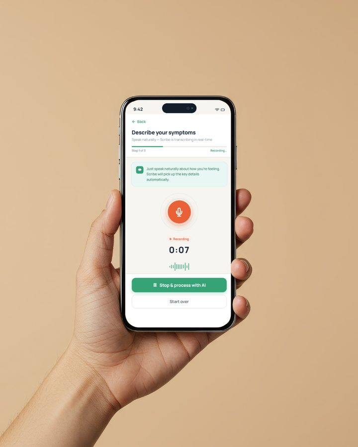
The idea
Saying how you feel is easier than filling in a form when you're unwell.
Patients waiting for a specialist are often asked to keep a symptom diary. CareLoop lets them talk instead of type, then turns what they said into the eConsult form their GP practice already uses.
01 · Context & problem
Patients are told to track symptoms, with nowhere to do it
We chose the problem after talking to the hackathon coordinators. One of them works at Accurx and told us what the company struggles with, and about her own experience of the NHS. Together with NHS waiting list data, that pointed to three problems.
Patients waiting for an appointment are told to track their symptoms, but there is no system to do it in.
Patients repeat their symptoms to every NHS service they see.
Clinicians get scattered information and see one snapshot, even when the patient has seen several professionals since the last visit.
Writing a symptom down means stopping, opening a form and typing, often when you feel worst. In our prototype the patient is waiting 84 days for a cardiology appointment, so the diary is also how the GP practice would notice if they got worse.
02 · My role
Product and project lead, and I built the prototype
I led a team of five from the problem to a working AI prototype in 24 hours.
I ran the ideation. After the conversations with the coordinators we picked a few problems and narrowed them down to one.
Once we had the problem, I built a quick prototype in Claude Code. The team followed its UI to the end.
03 · Key decisions
Decisions that shaped the product
Let patients talk
Typing is the barrier, so voice is the main input. Patients can speak while lying down or holding the phone in one hand, and anyone who prefers typing can switch.
Fill in the form the GP already uses
Scribe maps what the patient says onto NHS eConsult fields, so the practice gets a format it already reads. The patient checks and edits every field before anything is sent.
Build on Scribe instead of competing with it
Halfway through the build we found out Accurx already had Scribe, an AI transcription tool used in consultations. We reframed CareLoop as an extension of it: the same transcription, pointed at the patient and used across weeks rather than one appointment.
04 · The prototype
From a voice note to an escalation flag
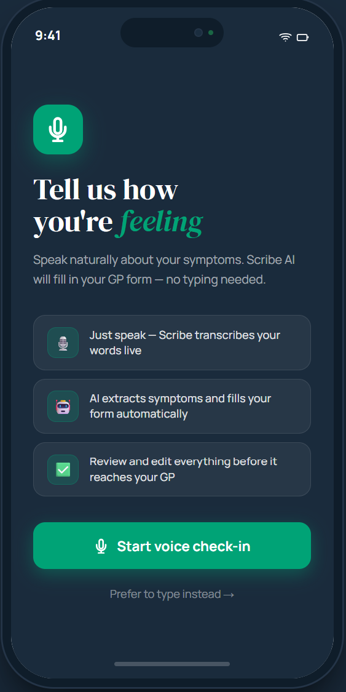
Start by talking. Typing is one tap away.
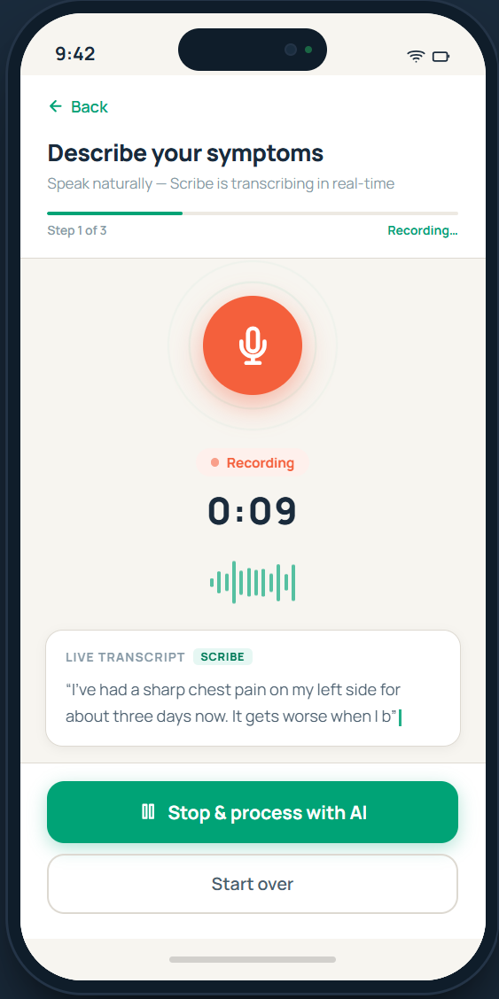
Scribe transcribes as the patient talks.
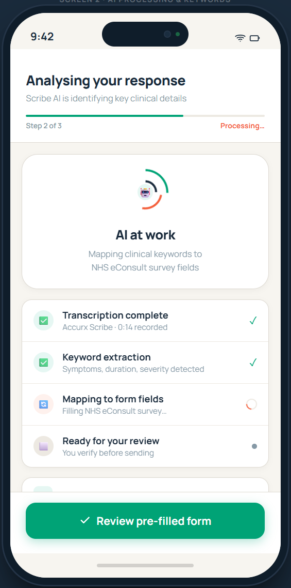
Scribe picks out the clinical details and maps them to eConsult fields.
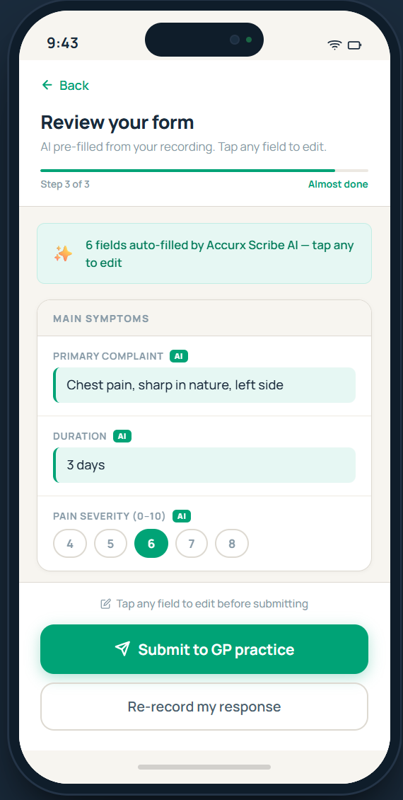
The patient checks every pre-filled field before sending.
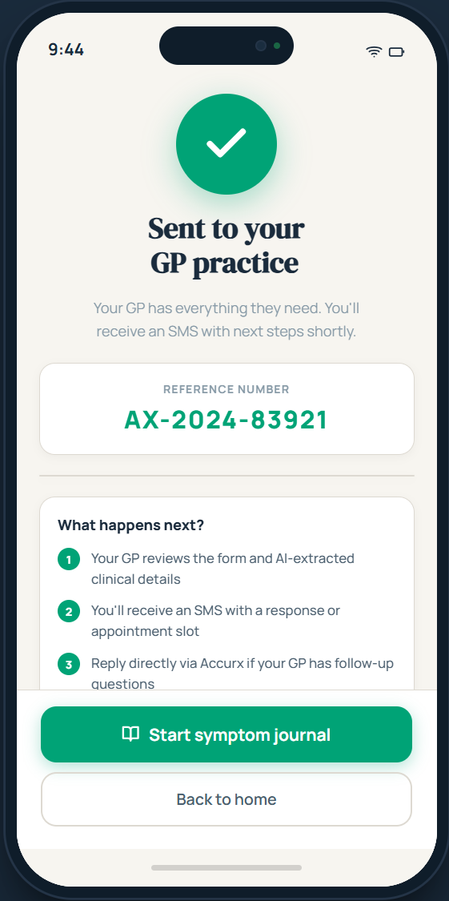
The form goes to the GP practice with a reference number.
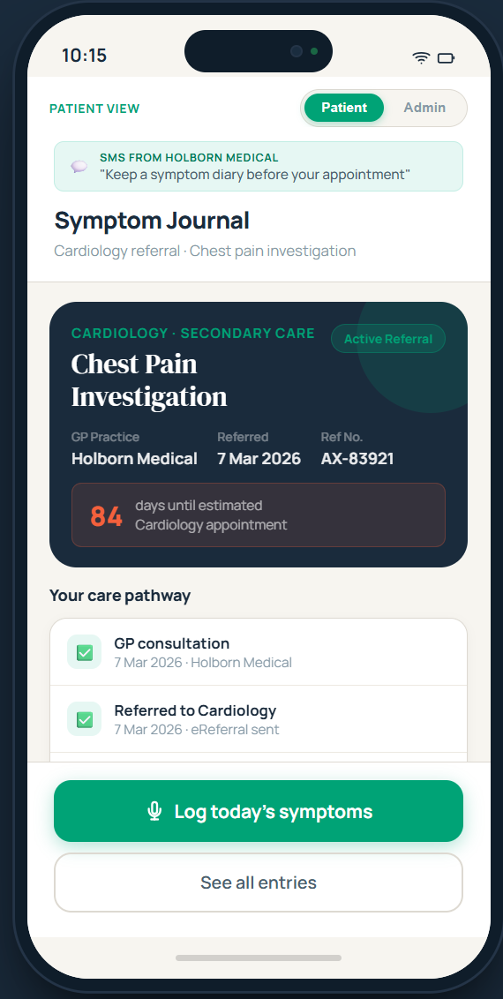
While waiting for cardiology, the patient keeps logging symptoms.
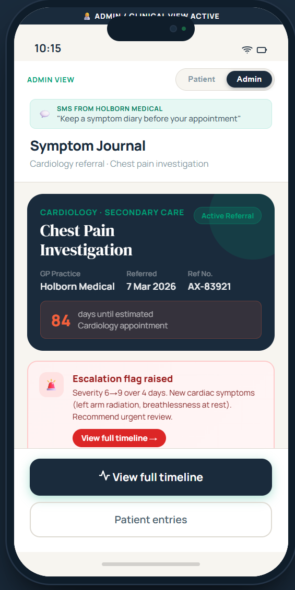
The practice sees an escalation flag when severity rises.
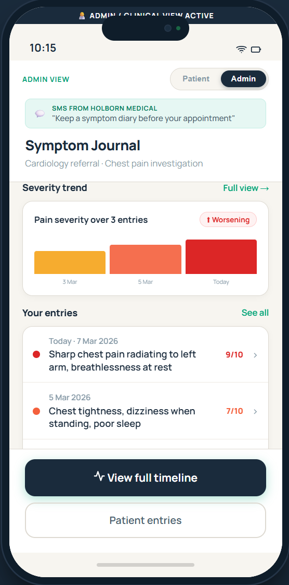
The severity trend and every entry in one view.
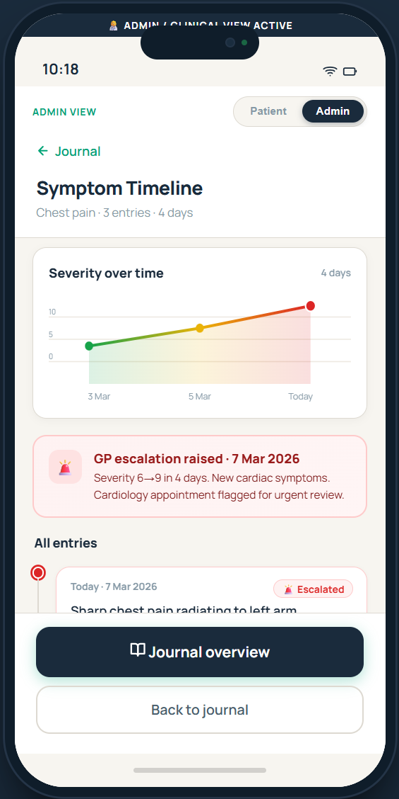
The timeline shows when the GP escalation was raised.
05 · Edge cases
The practice gets a flag, but nothing tells the patient to call 999
Handled in the prototype
Some patients can't or won't talk to an app, so typing is one tap away on the first screen.
Scribe can get a field wrong, so the patient checks and edits every pre-filled field before anything is sent.
When severity rises between entries, the practice sees an escalation flag with the reason.
What I'd design next
Designed after the hackathon. Not built, and not tested with patients or clinicians.
In our demo the patient's last entry is "sharp chest pain radiating to left arm" at severity 9, with breathlessness at rest. The practice gets a flag that recommends an urgent review. On the patient's side, nothing says this could be an emergency. We didn't look at this case during the hackathon.
In the prototype. The practice sees the flag.
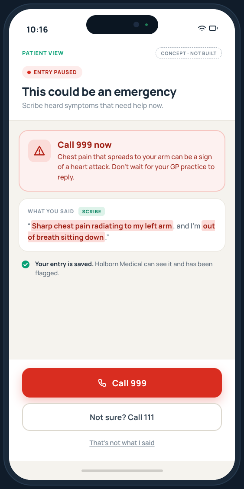
Concept, not built. The patient is told to call 999 as soon as Scribe hears the symptoms.
A flag waits until someone at the practice reads it, and that is too slow for these symptoms. So the first screen I'd add is for the patient. When Scribe hears red-flag symptoms, CareLoop pauses the entry and tells the patient to call 999.
The entry is still saved and flagged, and the screen says so. It also says not to wait for the practice to reply, because a patient could assume that logging a symptom means someone is already looking at it.
Transcription can be wrong, so the patient can say that isn't what they said and carry on. The practice would see that they did.
Which symptoms count as red flags, and the wording, would have to come from clinicians rather than from me.
Two more cases I'd look at after that. If the diary goes quiet for weeks, the patient could be fine or much worse, and the practice can't tell which. If a carer logs for the patient, the entry should say who recorded it.
06 · Outcome
We won the Accurx challenge
We pitched a working prototype after 24 hours. It was judged in the room and no patient has used it, so it shows how I scope and decide under time pressure, not that the product works.
07 · Reflections
What I'd do differently
Test the voice assumption. Many patients on long waiting lists are older, and we never checked whether they would want to talk to an app.
Ask a GP about the flags. A timeline means more information for clinicians who are already busy, and I'd want to know if it helps them or adds to the pile.
Look at the challenge partner's products before ideation, not halfway through the build.
Personal projectConceptRural Croatia
Cow Compass
A herd tracker for small farms where the signal comes and goes. It started when my family's bulls went missing for nearly two weeks. I interviewed four farming households in rural Croatia and designed a clickable prototype for the moment a cow gets out.
Research
4 interviews
Where
Gornji Skrad and Lasinjski Sjeničak
My role
Everything, from research to prototype
Built with
Paper, FigJam, Claude Code
All 16 cows are safeNorth field · updated just now
The idea
When a cow gets out, the farmer needs to know where she is, how old that position is, and how to reach her.
Cow Compass answers those three things on one screen. It keeps working when the phone loses signal, because on a hill farm that happens all the time.
Small farms lose animals and look for them the old way
In spring 2024 two bulls got out of my family's farm and were missing for nearly two weeks. My parents and the neighbours searched for them and lost time and money. The bulls damaged nearby properties, and when they were found they were thinner, stressed and confused. My family said they wished they had something that could track them.
That became the problem I wanted to understand. Farmers struggle to keep track of their animals and to get them back when they escape, and every escape costs money, time and stress.
Farms like ours are common. About 90% of the world's 570 million farms are run by families. In Croatia, 69.5% of farms are smaller than 5 hectares and a third of farm managers are 65 or older. In rural parts of the EU, fewer than half of people have basic digital skills. Livestock trackers on the market are built for large commercial herds, priced per collar with a monthly fee.
I interviewed farmers in Gornji Skrad and Lasinjski Sjeničak, two villages in rural Croatia. They keep bulls, cows and calves, between 5 and 20 animals. Some use apps every day and others farm without them. Today they find their animals by looking, by listening for the bell, with food as bait, with help from neighbours and with fences.
What they told me
Animals get out and move unpredictably, and nobody knows where they are until someone finds them.
A search brings panic and helplessness, and the fear that the animal will hurt someone or damage a neighbour's property.
Searching means long walks over rough ground, sometimes every day.
They rely on other people and old methods, and they want a better way to track their animals.
An animal that has been out loses weight or gets hurt, and a small farm feels every loss.
From the interviews I made one persona: a small-scale farmer, 50, with a herd of 5 to 25 cows in a remote village with poor signal and little technology.
What's on the market
I looked at eShepherd by Gallagher, Nofence, mOOvement and Monil. Some of what they do well made it into my prototype: map views farmers already know, night-time battery saving and alerts about the collars themselves. They are built for commercial herds in developed markets, and cost is where smallholders stop. One small farmer wrote online that a $60 tag already hurts.
My SWOT turned into three decisions for the concept.
Keep the first version to animal safety and escape alerts rather than heavy analytics.
Design for poor connectivity from the start, because a weak signal is normal in these villages.
Treat the collar as a dependency I don't control, and be honest on screen about what it can and can't see.
03 · Journey map and user flow
Following Daisy from the alert to the log
I mapped one escape, Daisy, cow number 7, from a normal morning to the moment the farmer looks back on it. Every stage has what the farmer is thinking and the opportunity for the app.
Redrawn from my FigJam board. The thoughts are the farmer's as I imagined them after the interviews, not quotes.Redrawn from my FigJam board. The “no” branch of the sync question became the offline state in the prototype: the last known position, labelled with its time.04 · From paper to prototype
Sketches first, then lo-fi wireframes
I sketched on paper first. My offline sketches show the dashboard when the connection drops: the time of the last sync, the last known status of each animal, and a note that live updates are paused. The animal status sketch lets the farmer log a manual check, add a voice memo, and see it queued for upload. Then I drew lo-fi wireframes in FigJam for the escape.
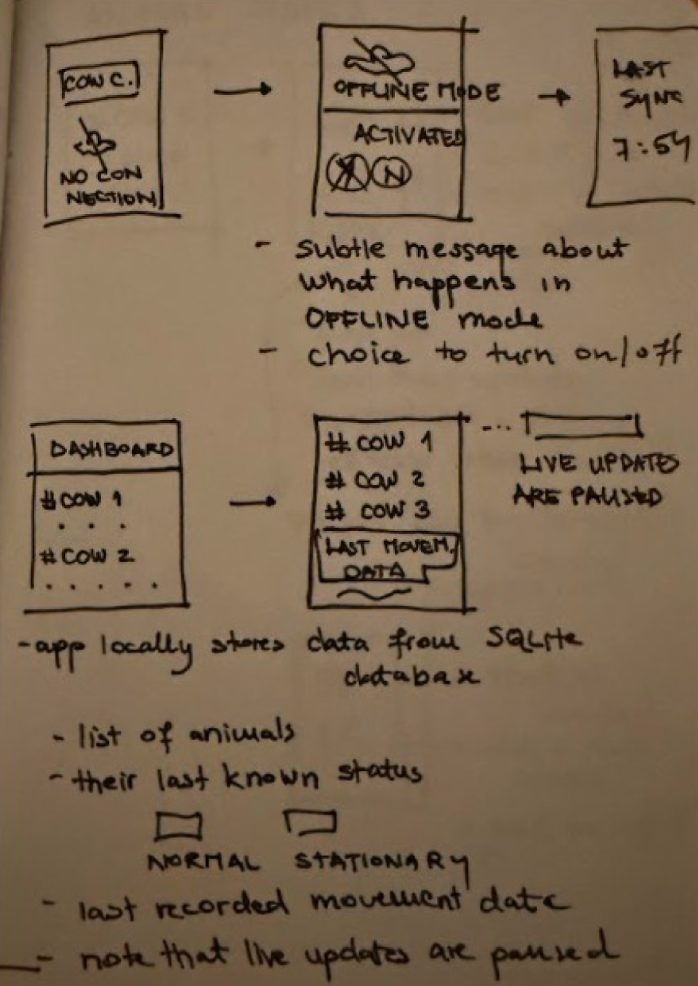
Offline mode on paper. Last sync, last known status, and a note that live updates are paused.
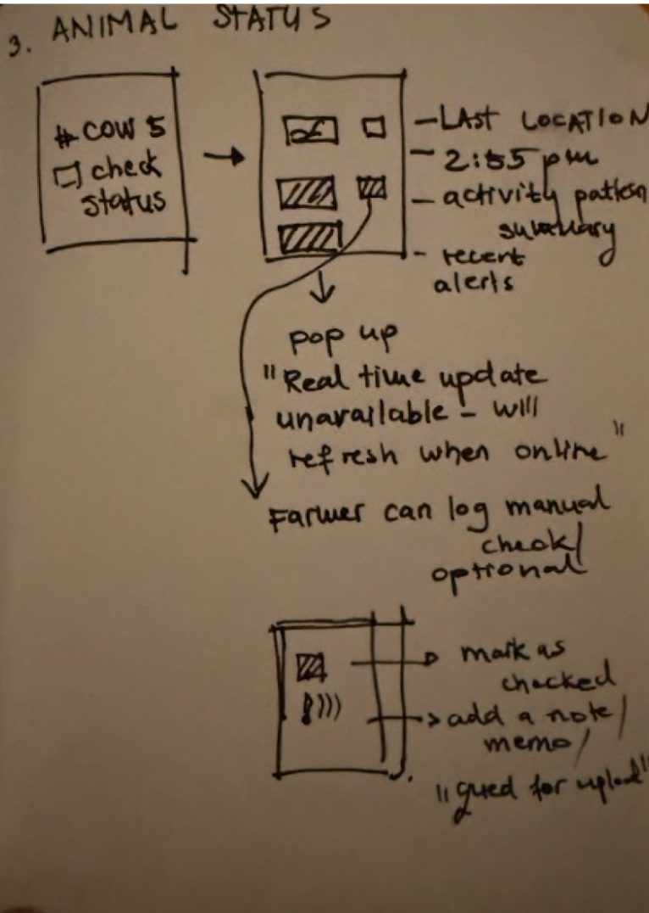
Animal status. Without signal the farmer can still log a check, and it waits for upload.
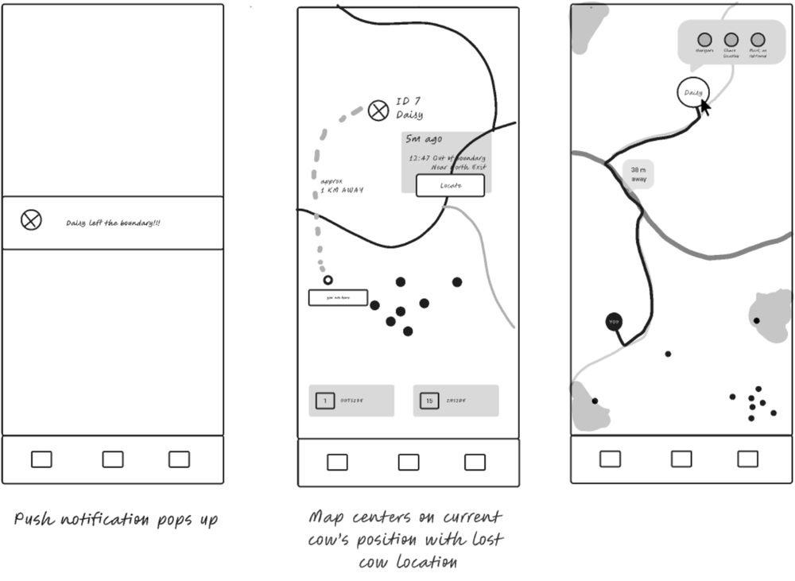
Lo-fi wireframes in FigJam. The alert, the map centred on the lost cow, and the route to her.
In 2026 I built a clickable prototype from these with Claude Code, with a playful look of its own: an illustrated farm with a road, a forest, a stream and sixteen cows that graze and wander.
05 · Key decisions
Decisions that shaped the prototype
Answer the first question first
My dashboard sketches started from what a farmer asks in the morning: are my animals safe, does anything need me now, what happened overnight. The Today screen opens with one answer, all 16 safe or who is out, before any map or list.
Show how old every position is
A position from 40 minutes ago looks like a live one unless the app says so. Every position carries a time. A cow that isn't live turns grey, and the wording changes from “updated” to “seen”, as in my wireframes.
Keep the walk going without signal
A phone's GPS works without mobile signal, and my notes planned for maps downloaded on wifi. So when the signal drops, the compass keeps pointing at Daisy's last known spot. It turns grey, says which time it points to, and draws a circle around that spot that grows every minute. The farmer can see how sure the app is without reading anything, the way a map app shows how accurate your own position is.
Log it in ten seconds
After an escape the farmer taps a reason, records a voice note or skips. Everything is saved on the phone first and sent when there is signal. The log is what makes patterns possible later, like three escapes at the same gate. The five reasons in the prototype are my placeholders, and the real ones will come from farmers.
Only alert for real problems
Cows graze right along the fence and push their heads through for grass, and GPS wobbles by a few metres. So near the fence the app waits two minutes before calling it an escape, a number I'd tune from how often a collar jumps the line when the cow hasn't left. A cow that is clearly out alerts straight away. Two cows that leave together get one alert, because if you find one, the other is there too. A low collar battery waits for a sensible moment.
One set of state colours
Green is safe, amber needs a look, red is an escape and grey is a position that isn't live. The colours mean the same thing on every screen and stay separate from the playful drawing around them, and the dark outlines hold up in sunlight. For a bigger herd I'd group cows into clusters, as some of the products I looked at do.
06 · The prototype
Four flows on one farm
The prototype has four flows: a morning check, Daisy getting out, no signal, and the herd with its history. There is also a phone signal switch, so any screen can lose signal while you look at it.
A normal morning. One answer first: all 16 are safe.
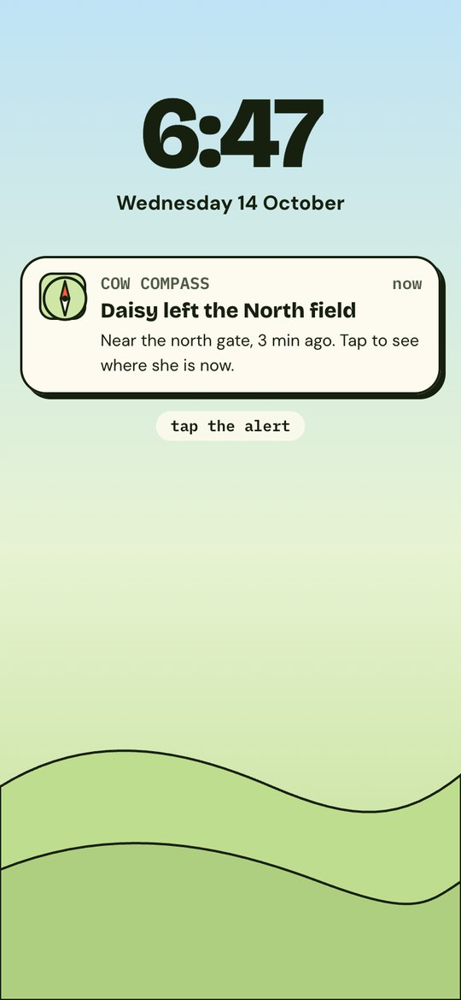
The alert names the cow, the place and the time.
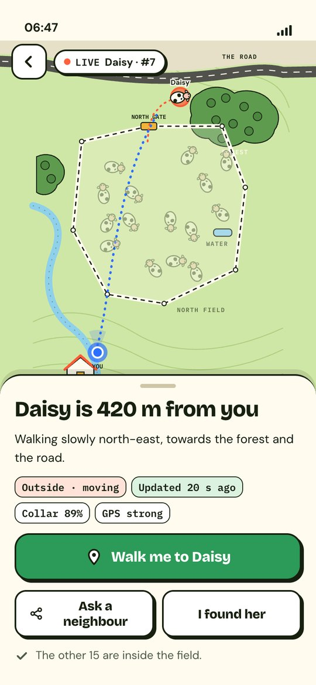
How far, which way, and how fresh the position is.
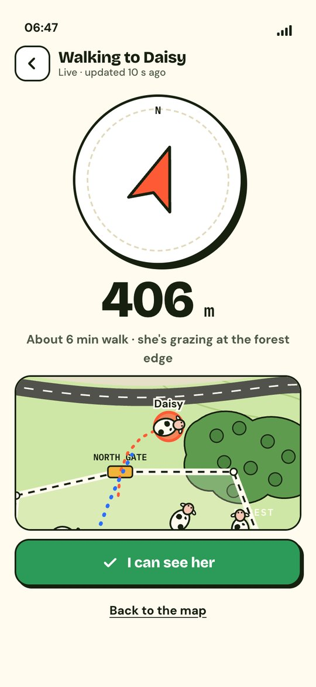
A big arrow and a distance for walking, readable at arm’s length.
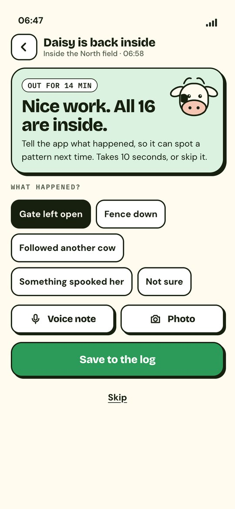
Back inside. Tap a reason or say it, or skip.
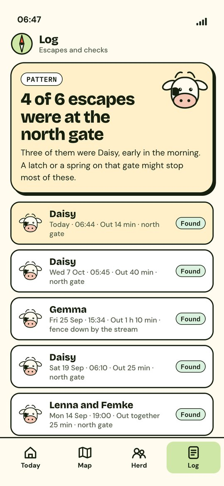
The log points at the north gate.
No signal
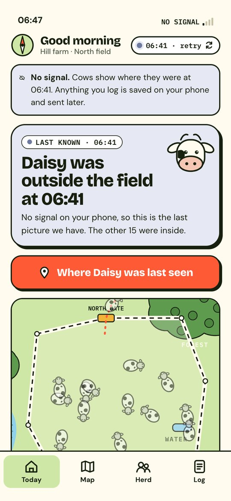
No signal. The last picture, with its time, and grey cows.
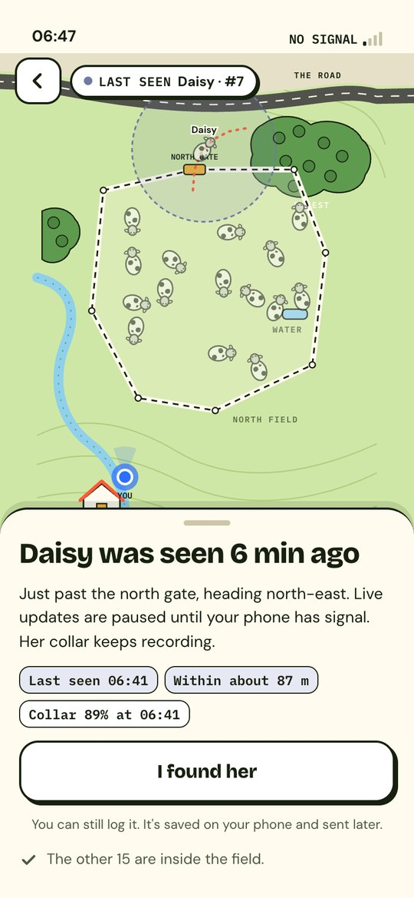
“Seen” instead of “updated”. Marking her as found still works.
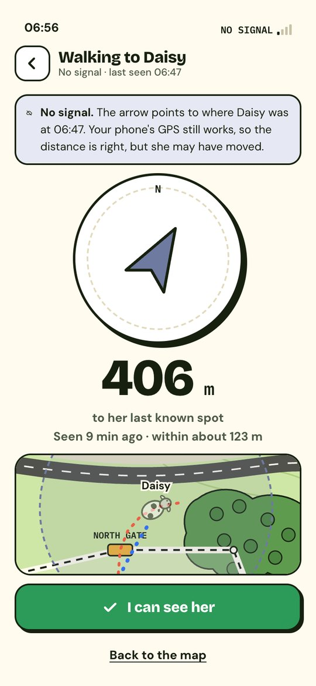
Signal drops mid-walk. The compass keeps going, and the circle grows with every minute.
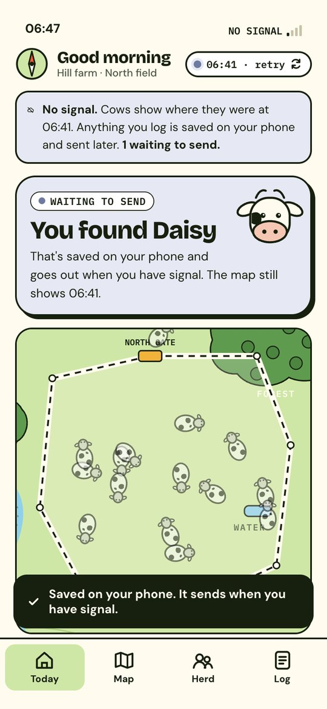
Saved on the phone, and sent when the signal is back.
Herd and history
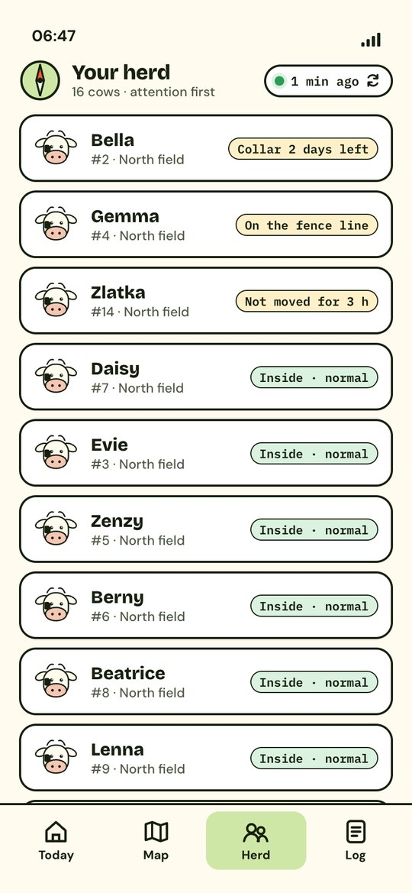
Cows that need something come first.
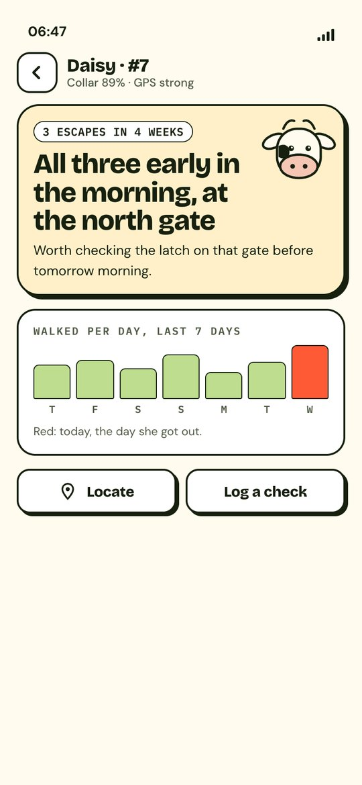
Patterns per cow turn escapes into a fix: the gate latch.
07 · States & edge cases
Not every alert is an escape
Handled in the prototype
A collar goes quiet in a dip where it can't reach the network. The cow shows as last seen, with the time, until it reports again.
A cow stands right on the fence line. GPS can be off by a few metres, so the app waits two minutes before it calls an escape. If she is clearly outside, the alert comes straight away.
Two cows leave together. They get one alert and one route.
A cow heads for a hazard. Farmers already know where their animals go when they get out, so they mark those places on the map once: the road, a river, someone else's crops. A cow near one is the most urgent alert, with a button to call a neighbour who is closer.
At night the collars save battery and report their position every 30 minutes. The boundary is loaded onto each collar, which checks it on its own, so an escape at 2 am still wakes the farmer straight away.
A collar battery runs low. The app offers to remind the farmer at the evening feed.
A cow stays still and on her own, away from the herd, for longer than is usual for her. She could be calving or hurt, so she gets a calm amber nudge. Cows lie down for hours, so stillness alone would ring every night.
The signal drops on any screen. Positions turn grey with a time, actions wait on the phone, and when the signal comes back the app says what changed.
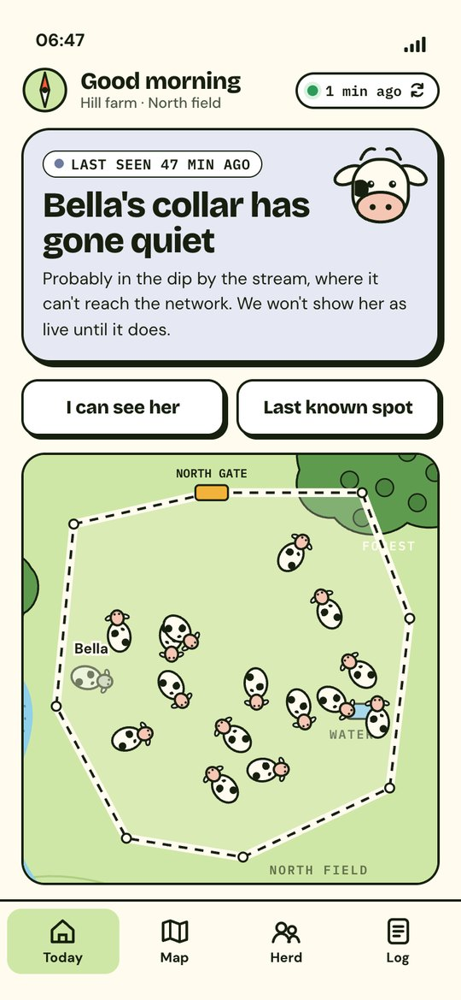
A quiet collar shows as last seen.
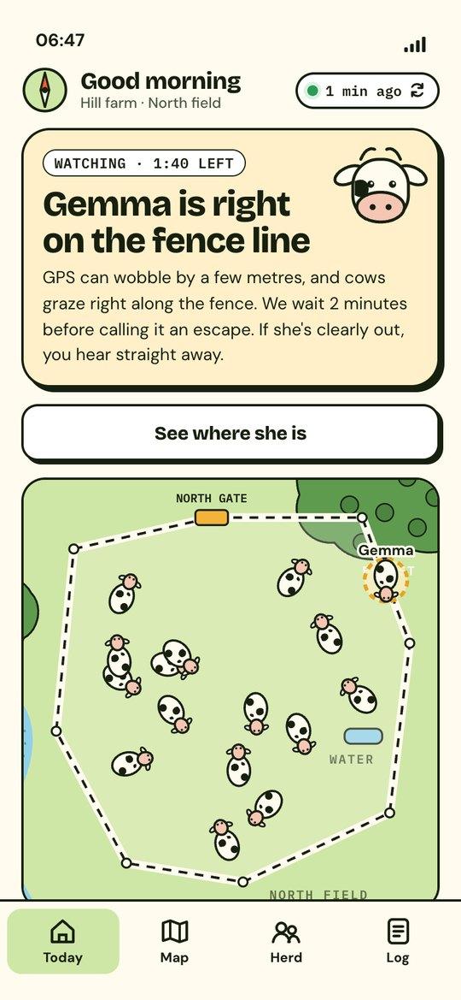
On the fence line. Two minutes before it counts as an escape.
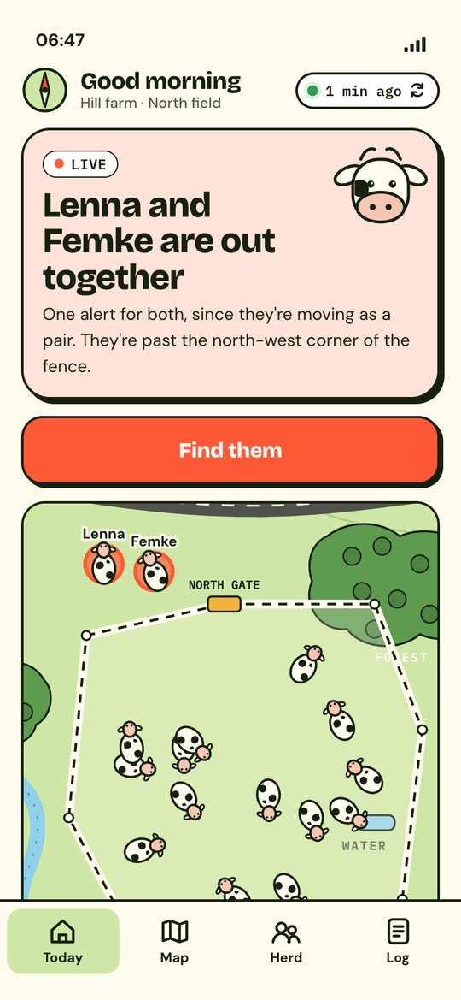
Two out together, one alert.
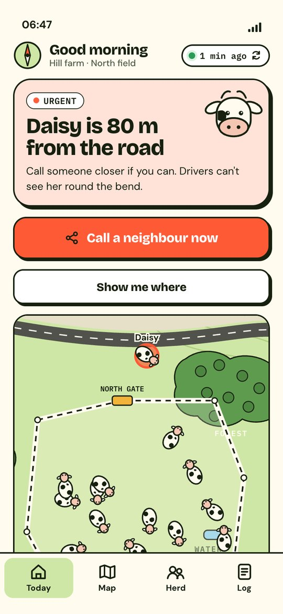
Near a hazard the farmer marked. The most urgent alert.
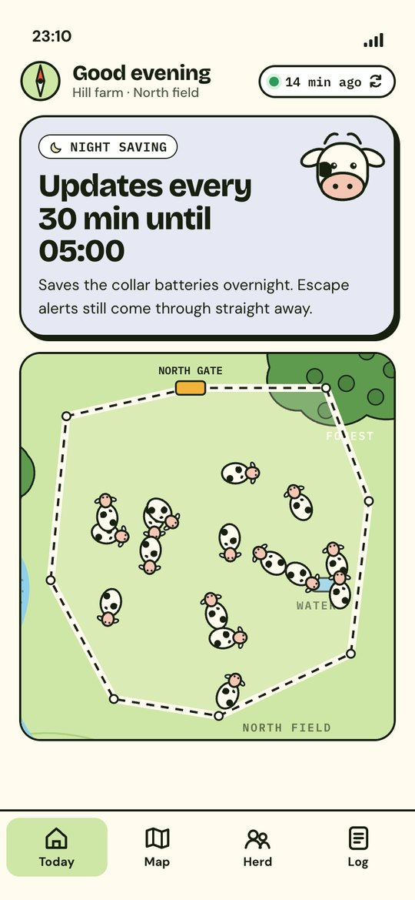
Night saving, and alerts that still come straight away.
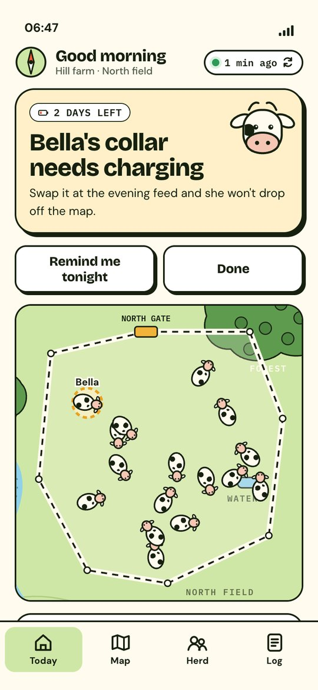
A low battery waits for the evening feed.
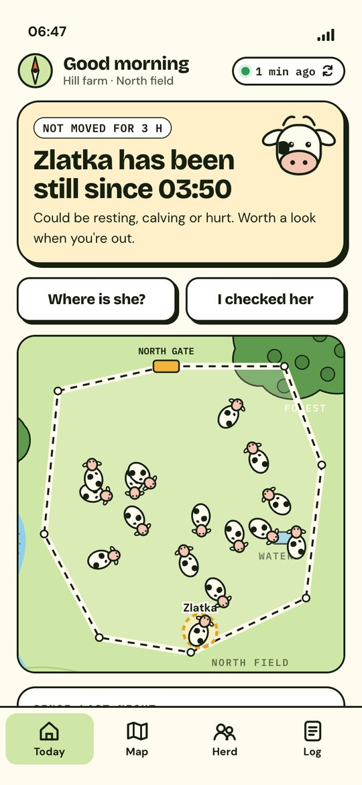
A cow on her own, away from the herd, gets a calm nudge.
What I'd design next
The biggest gap is the alert itself. If the farmer's phone has no signal, the escape alert can't reach it. The prototype shows what was missed once the signal is back, but that can be too late. So I'd let the farmer choose people who also get escape alerts, like a family member or a neighbouring farmer. They get escapes only, they see only the animal that is out, and they can do one thing: flag that they've seen her. To plan the search they call each other. This builds on the shared search from my second phase. It is a concept and isn't in the prototype.
08 · Outcome
A concept, not tested with farmers yet
The research is real: four interviews, a persona, a journey map and a user flow. I built the prototype in 2026 from that research, and no farmer has used it yet. It shows how I design for people who work outside with patchy signal, rather than proving that the product works.
09 · Next steps
What I'd test first
Show the prototype to the four households, starting with the alert. Two minutes on the fence line might be too long when a cow is heading for the road.
Ask what they would pay. Price stops smallholders before any screen does, and a design can't fix that alone.
Find out who should get the alert. On some farms it might be a son or a daughter rather than the person who owns the cows.
about.txt
From surveying buildings to designing products
I'm Aleksandra Vugdragovic, Alex for short, and I live in London. I spent five years measuring buildings and delivering survey projects. This is how that turned into product design.
2021
Surveying buildings
After a master's in landscape architecture in Zagreb, I started as a measured building surveyor in London. I scanned buildings on site with my colleagues and turned the point clouds into drawings and 3D models in the office.
2021–2025
The first process I fixed
I wrote AutoLISP scripts that standardised more than 47 CAD layers. It was my first go at fixing a process instead of working around it.
Dec 2024
Designing on the side
I started volunteering as the only UX designer at Nkomor Healthcare. For a year I redesigned their medication platform into a marketplace with one side for buyers and one for pharmacies.
2025
A tool for my own team
As a project manager at DPR, I ran a 10-storey survey project from fee proposal to handover. Drawing QA ran on email, with no record of who checked what. I interviewed five people across two QA teams, designed a checklist tool, built it with Lovable and Claude, and my team piloted it on about 10 projects. Read the case study
2026
Hackathons
I took part in three. CareLoop won the Accurx challenge, Notice made the top 6 of 19 at Wise, and MoonMates won the Engine by Starling challenge. On CareLoop and MoonMates I led the ideation and built the first prototype. CareLoop · MoonMates
Now
Moving into product design
My department at DPR closed in September 2026. Since then I've been building this portfolio, including Cow Compass, a concept for farmers in Croatia whose cattle get out. I'm looking for a product design role in London, especially in construction tech and geospatial, where my background helps most. Cow Compass
HuddleHive NHS HackathonWINNERAccurx challenge · CareLoop · led a team of 5 · 24h
alex@moon:~$_
PilotedInternal toolDPR · measured survey
Drawing QA tool
Drawing QA at DPR ran through Outlook threads, with no shared standard and no record of who checked what. I designed one checklist that keeps the feedback and the record with the project, built the prototype with Lovable and Claude alongside my PM job, and piloted it on about 10 projects in my team.
Where
DPR, London
When
Nov 2025 – Sep 2026
My role
Sole designer & builder
Built with
Figma, Lovable, Claude
Before
RE: RE: FW: level 03 comments
screenshot (4).png
did anyone check grid D?
updated markups attached
2 to 3 h rewriting per projectAfter
Point cloud aligned to OS grid
Attaches in AutoCAD without errors
No double lines or duplicate points
Scan covers the surveyed area
report.pdf · who checked what
The problem
Feedback lived in email, and there was no record of who had checked what.
Drawings and 3D models came from our team and from external contractors. Before the tool, I timed the admin: rewriting feedback lost in email took 2 to 3 hours per project.
01 · Before and after
One checklist instead of an email loop
02 · Who it's for, and my part
Three groups moved work through QA
SSurvey team
My team. Checks drawings and models before they go out.
CExternal contractors
Planned for phase 2: feedback tied to the check that failed.
RRights of Light team
Asked for a QA report they could export.
I was the only person designing it, while running projects as a PM.
Interviewed 5 people across the two QA teams
Mapped how work moved through QA for each group
Turned the teams' existing guidelines into one checklist
Built the prototype with Lovable and Claude, and piloted it on about 10 projects
Checked feasibility with a business analyst, then tested it with both team leads
Designed a phase 2 concept and tested it with someone from outside the industry
03 · Key decisions
Keeping it small enough to ship
Build for QA, leave project management out
Sorting the pain points by who raised them split them into two problems. QA happened on every project and rework started there, so I built for that.
Start from the rules people already use
The checks come from the teams' own guidelines, in their words, like "Point cloud aligned to OS coordinate system". Each one is a pass, needs improvement or a fail.
Keep feedback next to its check
The team leads didn't want another tool to switch between, so reviewing, screenshots and the report sit on one screen.
From my FigJam research board. The checklist kept this structure, so checks like Point Cloud Data sit in their own section under each review type.04 · The prototype
One review, start to finish
From my research board. Internal work comes from the survey and Rights of Light teams, external work from contractors. The decision either exports the report or sends the work back to the checklist.
The first idea had three tabs: checklist, screenshots and report. I presented it to the analysts and the senior leaders of the team and tested it with them. The tool changed after that, but the basics were already there: every check gets a pass, needs improvement or a fail, a screenshot sits on its check, and the report lists what passed and what needs work.
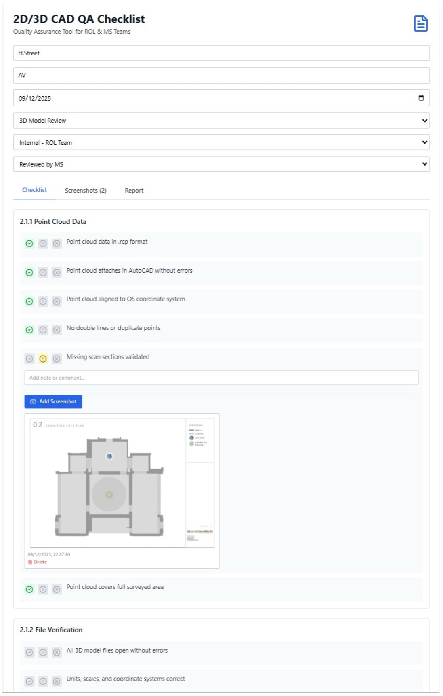
First idea. The checklist. Each check is a pass, needs improvement or a fail, with a note and a screenshot.
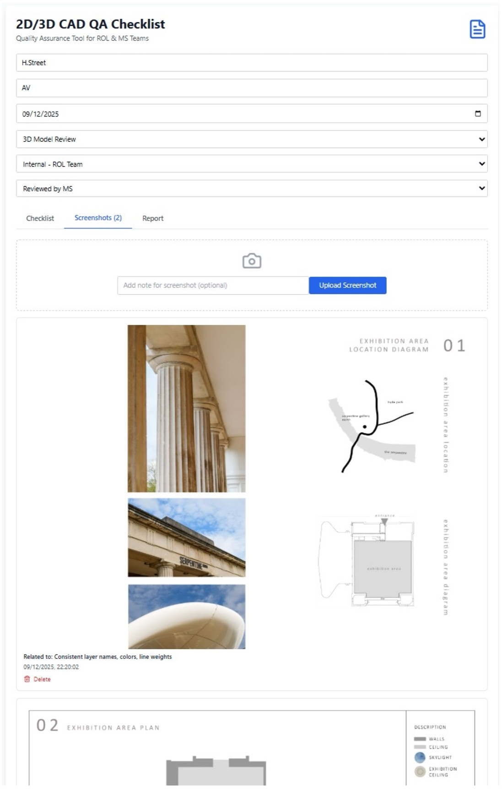
First idea. Screenshots in one tab, each linked to its check.First idea. The report lists what passed and what needs improvement.
Screens from the phase 2 concept, rebuilt in Lovable with made-up projects and people. The two report screens are from the version my team piloted. The queue, the tree, @mentions and the failed check came after the usability test. Click a screen to enlarge it.
After the test. The review queue. Every column sorts and filters.After the test. A review: job details, progress and the checklist as a tree.After the test. A failed check opens in place, with a note, a screenshot slot and the conversation.After the test. Typing @ suggests people with their role and team.In the pilot. The report counts issues, improvements and checks not done.In the pilot. Approve stays locked until every check is done.
05 · Edge cases
Work goes back for fixes, but round two isn't designed
Handled in the prototype
A half-finished review can't be signed off. Approve stays locked until every check is done, and the report counts the checks not done.
A check that doesn't apply to a job can be marked N/A rather than forced into a pass or a fail.
A problem that isn't serious enough to fail goes under "needs improvement", and the report lists those separately from the fails.
A review with a fail can be returned for fixes, with a note on each issue saying what the team must do.
What I'd design next
Designed after the pilot. Not built or tested.
The flow has a loop back to the checklist, and the report has a Return for fixes button. I never designed what the reviewer sees when the fixed drawing comes back. The tool was meant to keep a record of who checked what, so a check that failed and then passed has to show both results.
Concept, not built. Round 2 of the same review. Only the checks that failed or needed improvement are open.
Round 2 opens in the same review rather than a new one, so the first round's notes and screenshots stay on their checks.
Only the checks that failed or needed improvement are open. The ones that passed carry over, and the reviewer can reopen any of them, because a fix can break something else.
The round 1 note is read only and the author's reply sits next to it, so the reviewer compares the fix with the original comment.
The report would show both rounds for each check, with who checked it each time.
Two more cases I'd look at after that. An author might disagree with a fail. The conversation is there for that, but there is no disputed state and nobody is named to decide. In a small team a reviewer will sometimes be asked to check their own drawing, and the report should at least show that.
06 · Outcome
Piloted on about 10 projects
My team, the measured survey team, used it on about 10 projects. Each piece of feedback was written once, next to its check, so nobody had to rewrite it. Before the tool, that rewriting took 2 to 3 hours per project. I didn't time it again during the pilot, so the saving is an estimate.
Senior stakeholders wanted to know what I was proposing. In the end the tool wasn't a priority for DPR, and the one engineer who would have maintained it already covered everything else. I think it wasn't worth the cost for a tool that two or three teams would use. Phase 2, with the second QA team and the contractors, didn't go ahead.
From a demo: the head of the analyst team saw that the export could produce the reports they send to surveyors, so I kept the export flexible.
07 · Testing the phase 2 concept
Six changes from a usability test
I tested the phase 2 concept with one person from outside the industry. They had never done drawing QA, so they got stuck on things my team had stopped noticing.
Feedback
The To review and In progress tabs didn't look clickable
Change
Pointer and hover on everything you can click, and a whole row opens its review
Feedback
They wanted to sort and filter by clicking a column
Change
Every column header sorts and filters, and active filters show as chips
Feedback
Back didn't return them to where they had been
Change
Back keeps the tab, filters and sort, and so does the browser button
Feedback
They wanted to tag people and ask someone else to review
Change
Reviewers, assignee and contributors, Request review, and @mentions
Feedback
The checklist should branch like a tree
Change
Sections nest under the review type, with progress for each section
Feedback
It felt like a dull tool
Change
Loading states, a progress bar and short transitions between pages
08 · Reflections
What I'd do differently
Narrow earlier. I designed for six problems before asking which one mattered most.
Share rough work sooner. I thought my mind map wasn't good enough to show, and it was the most useful thing I shared.
Measure during the pilot, not only before. I timed the admin before the tool but not after, so the saving is still an estimate. I'd also track the time from feedback to fix.
From my research board. After the interviews I started with a dashboard, project tracking and a resource library. The pilot kept only the QA review branch.
BonusBuilt over the hackathon weekend
Bagcheck
What did the hackathon do to your face?
A tongue-in-cheek app for the morning after. Scan a selfie on the first morning and again on the second, and Claude scores how tired you look: under-eye puffiness, dark circles, dull skin and red eyes. Then it gives you a 20-minute fix to be pitch-ready, and a slider puts Day 1 next to Day 2.
The practice scan works any time. Real scans open between 05:00 and 12:00.
Claude reads the photo you give it. Just for fun, not a medical reading.